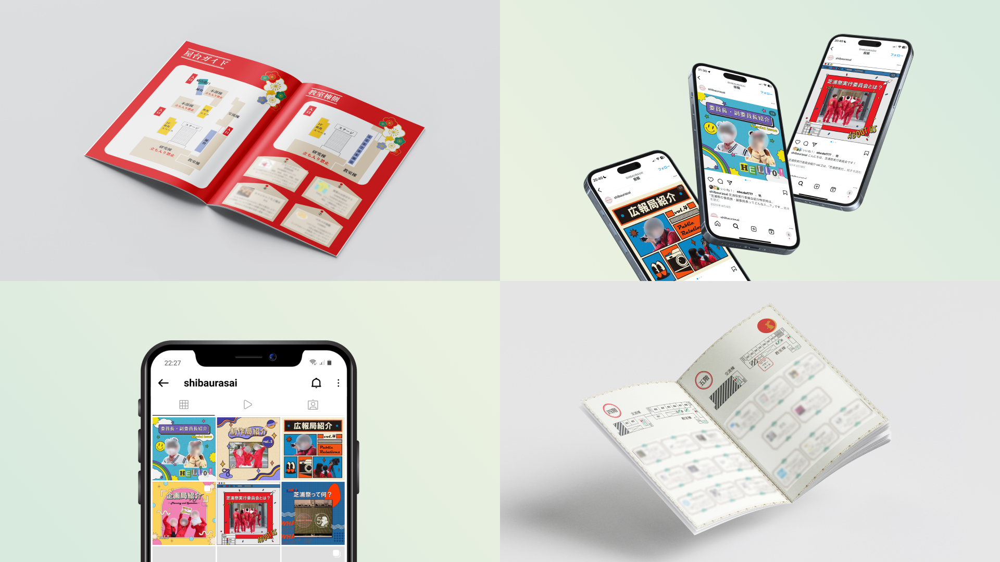
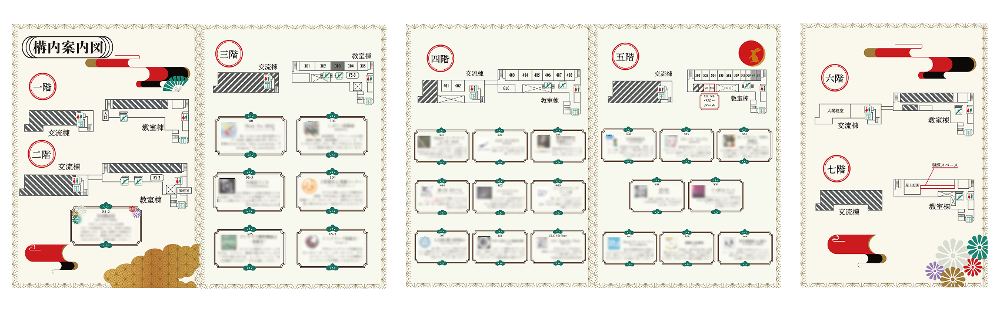
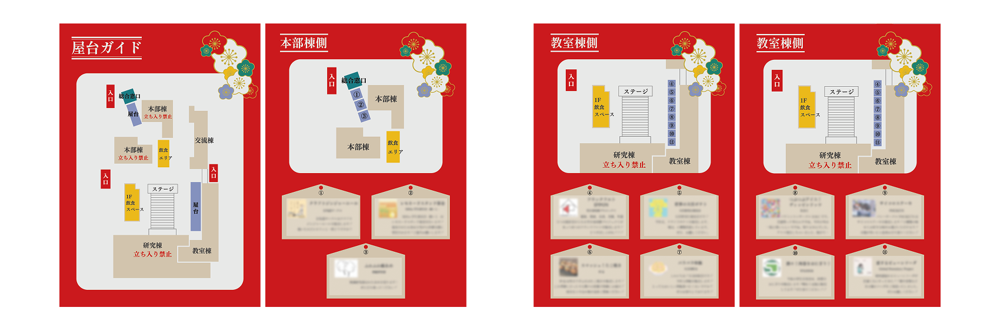
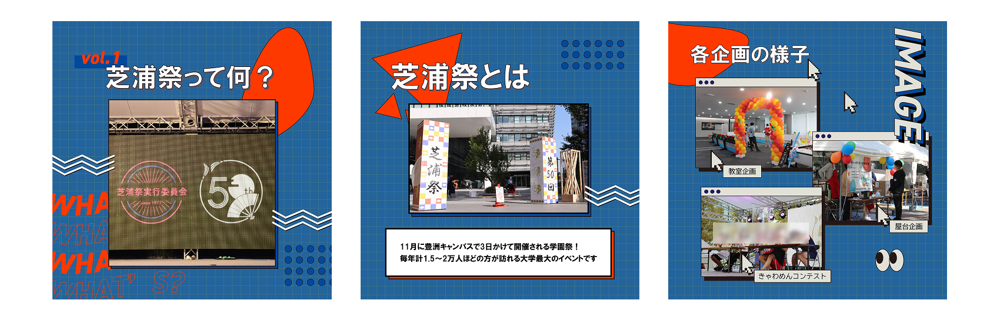
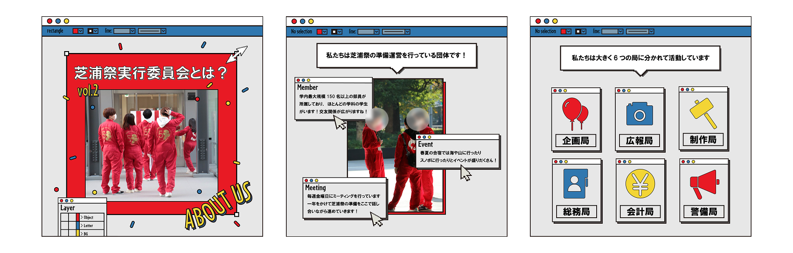
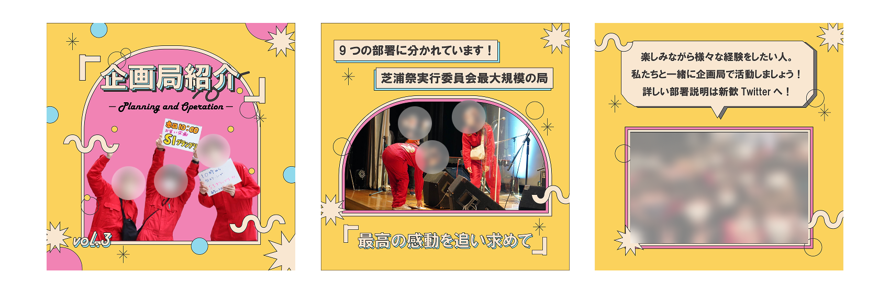
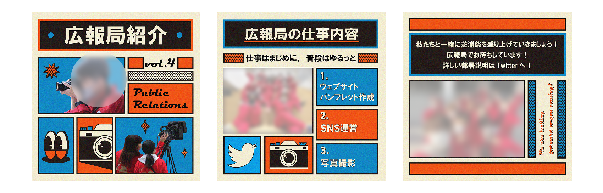
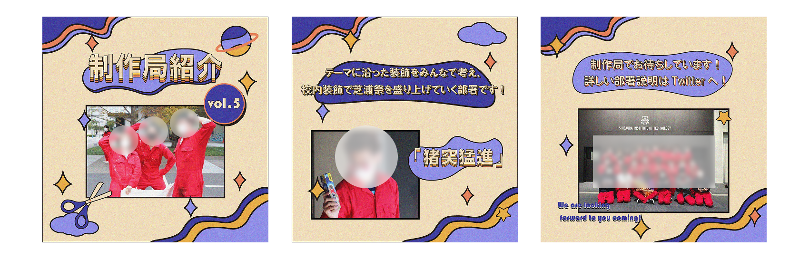
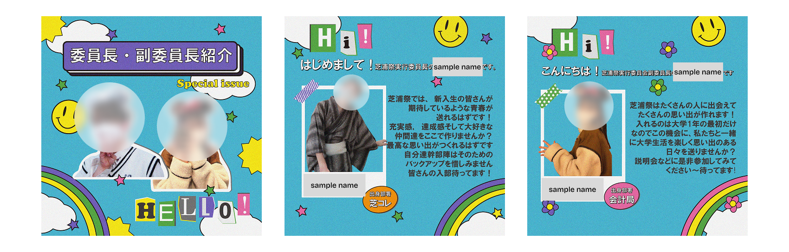

Role&Context
学園祭の魅力を最大化する、ビジュアルコミュニケーション設計
大学の学園祭実行委員会 広報局にて、学園祭当日に配布する公式パンフレットのデザイン、及び新入生歓迎に向けたSNS広報用グラフィックの一部制作を担当しました。
単なるビジュアル制作に留まらず、週1回の定例会議や各局との連絡を通じて、掲載内容のヒアリングと要件定義を徹底。チーム内で密にコミュニケーションを取りながら、目的とターゲットに合わせた情報設計とデザインのアウトプットを行いました。
Pamphlet Design
世界観と機能性の両立
学園祭のテーマである「和」に対し、パンフレットは春夏秋冬がめくるごとに進んでいくようなデザインにしました。担当した「秋・冬」ページでは、月見や正月(絵馬など)のモチーフを散りばめ、季節感のあるビジュアルを制作しました。
制作において最も注力したのは機能的な情報と装飾の調和です。前年度のフロアマップデータをベースに流用しつつも、そのまま配置すると新しい和の装飾から浮いてしまうという課題がありました。そこで、地図として視認性を保ちつつ、ベースの配色やフォントを全体のデザインルールに合わせて細かく再調整し、違和感なく世界観に没入できる紙面へとアップデートしました。
※セキュリティおよびコンプライアンスの観点から、ポートフォリオ掲載にあたり、第三者団体の名称・ロゴ・紹介文、および人物の顔写真等にはすべてマスキング処理を施しています。

学園祭パンフレット - フロアガイド

学園祭パンフレット - 屋台ガイド
SNS Graphics
ユーザー動線を意識したSNS展開
新入生歓迎のための広報ビジュアルでは、「新しい環境へのワクワク感」を届けることを最優先に設定しました。堅苦しさを排除し、男女問わず親しみを持ってもらえるポップなコラージュスタイルを採用しています。
単に絵作りをするだけでなく、ユーザーの閲覧フローを意識した構成を行いました。1枚目（表紙）はインパクトと世界観でユーザーの興味を惹きつける「フック」として機能させ、スワイプした先の2〜3枚目で具体的な委員会情報を読ませる、という論理的な情報設計に基づき制作しています。
※セキュリティおよびコンプライアンスの観点から、ポートフォリオ掲載にあたり、第三者団体の名称・ロゴ・紹介文、および人物の顔写真等にはすべてマスキング処理を施しています。

学園祭の概要

委員会の概要

企画局紹介

広報局紹介

制作局紹介

委員長・副委員長紹介